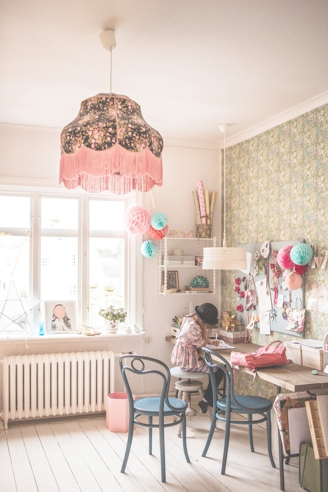

Blog Title
I’ve declared my passion for Zara before on here before. Their style and price point are a winning combination for me. Add to that fresh, modern and clean styling and photography and I’m sold. Recently I came across their Brothers And Sisters campaign online which even comes with it’s own hashtag – no points for guessing what it is – #brothersandsisters, duh. I recognised the little girl in one of the shots and bingo, it turns out it is Joy Cho’s daughter from famous LA blog OhJoy, shot by her mum in Zara attire for the Brothers And Sisters campaign. What a neat idea! And oh so clever marketing. Bloggers can associate themselves with a hip brand and get referrals from the Zara site and Zara gets kudos through their selected bloggers. Everyone’s a winner!